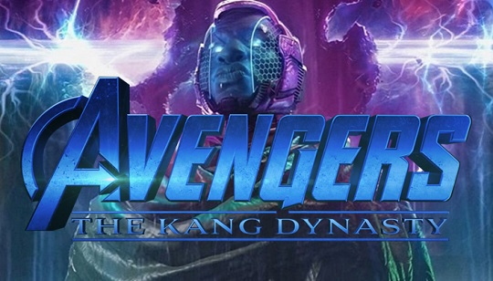
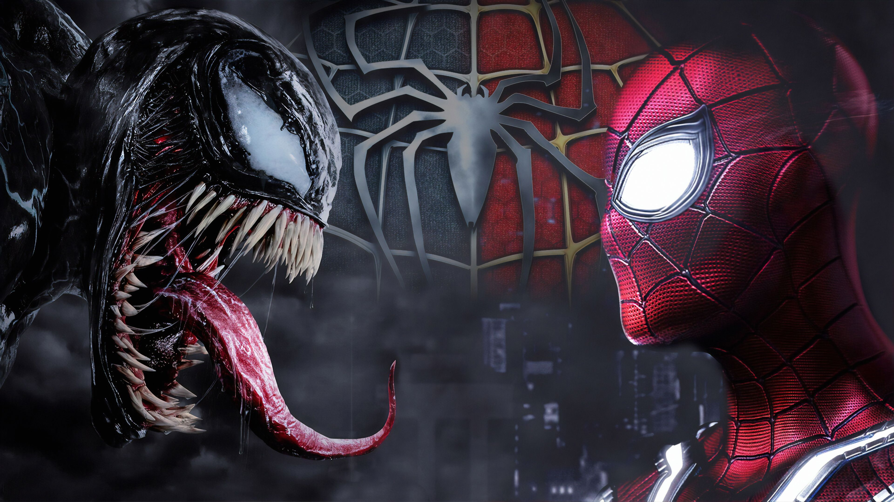
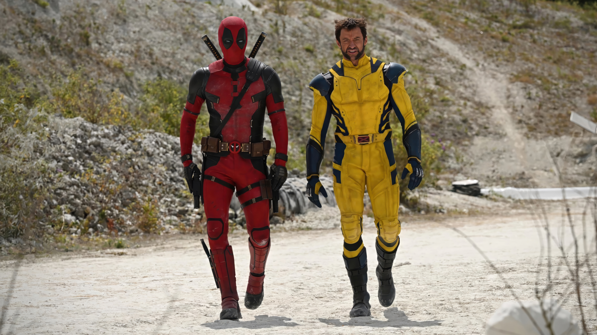

Em terceiro lugar dos filmes mais aguardados, vamos começar falando sobre Vingadores 5. Na trama, Kang, o Conquistador, e seu filho, o Centurião Escarlate, usam vilões como Cranius, Attuma e Deviantes para expandir seu domínio, provocando conflitos e exilando heróis no espaço. O Capitão América e sua equipe eventualmente derrotam Kang, mas não antes de ele causar mortes em massa e caos em várias nações.
Após derrotarem Kang, os Vingadores saem enfraquecidos e traumatizados, incapazes de reverter o genocídio causado por ele. Esta tragédia, ao contrário de eventos passados, marca a equipe como menos confiável aos olhos do público. Embora os heróis o tenham afastado, Kang considera sua dominação breve como uma vitória. A proximidade entre os lançamentos de "Vingadores: Dinastia Kang" e "Vingadores: Guerras Secretas" sugere que Jonathan Majors, o Kang, pode persistir como um desafio além do quinto filme, possivelmente levando a uma grande incursão a ser resolvida no próximo longa.
Infelizmente não saiu muitos detalhes sobre o filme, mas a espectativa do público está alta demais.
Além de ganhar uma data de lançamento, também divulgaram o nome oficial do filme: "Venom: The Last Dance." Ou na tradução "Venom: A Última Dança." Com esse título, os fãs começaram a especular uma possível despedida do simbionte e seu hospedeiro, Eddie Brock.
O próximo filme estrelado por Tom Hardy em Venom pode ser o encerramento da trilogia. Rumores sugerem que a trama envolverá a busca de Venom por Peter Parker, conectando-se ao Homem-Aranha do MCU, interpretado por Tom Holland, possivelmente indicando um embate entre os dois personagens.
O título sugere uma possível participação do Homem-Aranha na trama. Venom, ao contrário de outros vilões, é inicialmente uma oposição ao herói nos quadrinhos. A simbiose com Eddie Brock cria uma versão sombria do Homem-Aranha, alimentada pela vingança contra suas frustrações pessoais.
Em primeiro lugar obviamente não podedia ficar de fora o nosso queridinho Deadpool. Após o divulgamento da trama os fãs começaram a ficar ansiosos para o lançamento do filme, podendo ser o filme mais aguardado de 2024.
Deadpool 3 conta com o retorno de Ryan Reynolds no papel do Mercenário Tagarela e, em uma das parcerias mais aguardadas do cinema de herói, contará também com Hugh Jackman reprisando seu papel icônico de Wolverine.
O terceiro filme do herói promete mudar o Universo Cinematográfico da Marvel ao lado de Wolverine. Lembrando que no final de seu último filme, Deadpool adquire um dispositivo de viagem no tempo de Cable, permitindo uma possível justificativa para sua interação com os Vingadores.
Algumas imagens da gravação já foram vazadas e podemos ver os dois protagonistas ao lado do outro ou interagindo entre si. Deadpool está em seu traje preto e vermelho, assim como foi usado em seus filmes anteriores. Já Wolverine está usando um traje amarelo, parecido com um que ele usava nas hq's.
